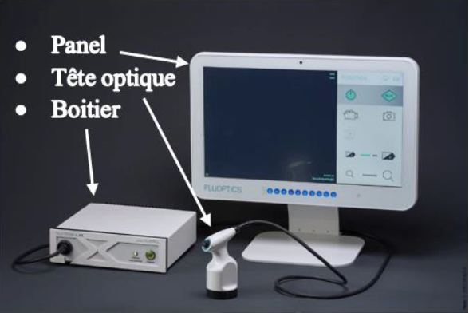
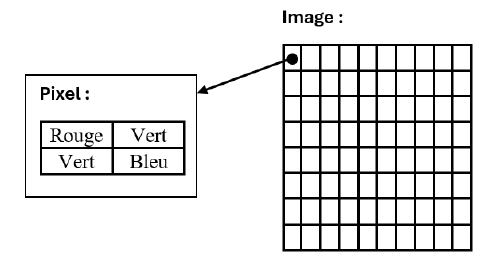

Introduction
Tout au long de mon stage à Fluoptics, entreprise travaillant dans l’imagerie médicale par
fluorescence, j’ai pu évoluer dans l’équipe logiciel au sein du service recherche et
développement. Au cours de cette période de stage, j’ai eu pour tâche l’ajout et la modification
de fonctionnalités à un outil d’imagerie médicale utilisé pendant les chirurgies : le Fluobeam LS.
On retrouve dans ces ajouts l’implémentation d’un système de calibration par gain des couleurs,
de la page d’exportation des examens effectués ou encore d’un mot de passe de secours en cas de
perte.
En ce qui concerne les solutions d’imagerie de Fluoptics, elles consistent en une
caméra couplée à un laser, qui permettent de récupérer des images dans le proche
infrarouge. Ces images sont transmises à un boitier contenant une carte d’acquisition
puis envoyées au panel, un ordinateur avec écran tactile, relié au boitier. Lors des
chirurgies on peut avoir recours à deux techniques différentes, toutes deux ont pour
objectif de visualiser la fluorescence. Dans un premier cas, on injecte du vert
d’indocyanine que l’on appelle l’ICG, un colorant qui émet une lumière fluorescente
par illumination avec un laser infrarouge, pour pouvoir visualiser sur un panel tactile
la circulation du liquide injecté dans le patient, là où s’effectuera la chirurgie. Dans
un second cas, à Fluoptics on a recours à l’auto-fluorescence, en utilisant la
fluorescence naturelle des organes pour éviter l’injection d’ICG.

Missions
Au cours du stage, on m’a confié diverses missions, ce qui m’a permis différents travaux propres au domaine métier. J’ai pu effectuer des tests d’intégration pour le Fluobeam LS, mais aussi pour le Fluobeam LX et une partie des tests du Fluobeam LX Red, qui me permirent d’une part de me familiariser avec les outils, de comprendre les différences entre les multiples solutions et d’autre part de chercher des potentiels bugs dans l’application. Il me fut proposé la modification d’informations et la correction de bugs, pour me permettre de prendre en main le code du logiciel, sur lequel j’allais développer. Après avoir appris à maîtriser le logiciel et son code, je pus me lancer dans l’implantation des nouvelles fonctionnalités.
Calibration des couleurs
Une image est composée de pixels, acquis en couleur puis rendu en noir et blanc. En effet, comme l’objectif est de récupérer des couleurs dans le proche infrarouge, l’affichage en couleur ne permettrait pas une meilleure précision. Chacun de ces pixels est composé de quatre octets, soit huit bits codant une information en binaire, un pour le rouge, un pour le bleu et deux pour le vert :

Toutefois, la tête optique détectait différemment le bleu ou le rouge, ce qui avait tendance à générer un quadrillage sur les images acquises par la tête optique. C’est pourquoi, il fallut implémenter l’ajout et l’application d’un gain de calibration pour ces deux couleurs afin de corriger cela. Cette implémentation m’a permis de découvrir la librairie commune, une libraire qui permet de centraliser les fonctions utilisées par le logiciel du LS et le service performance software nommé le SPS. Il s’agit d’un outil pour caractériser les produits en production, vérifier qu’ils ont les bonnes spécifications, comme, par exemple l’émission du laser. L’objectif était de modifier la librairie commune, pour qu’elle permette de lire et écrire en mémoire du boîtier des valeurs de gain, qui seront à terme calculées par le SPS. Puis de modifier le Fluosoft LS pour lire les valeurs et les appliquer au paramétrage caméra.
Exportation des examens
Une fois les examens effectués, les informations qui lui sont propres sont enregistrées sur
le panel, soit les données, photos, images et commentaires. Il faut un moyen pour les
chirurgiens d’exporter ces informations sur support USB. L’objectif de cette
fonctionnalité est donc de créer une nouvelle page, sur laquelle il faut afficher la liste
des examens, en prenant en considération les types d’affichage, pour le format de la date
et de l’heure précisés dans le fichier de configuration :
• Griser l’examen dans la liste, s’il ne contient ni photo, ni vidéo
• Changer l’affichage de la date et de l’heure en fonction du format précisé dans le fichier de configuration
• Gérer la multi-sélection pour définir les examens à exporter
• Créer une case à cocher pour sélectionner et désélectionner tous les examens
• Mise à jour de l’affichage, lors de l’ajout d’un examen
Mot de passe de secours
Dans le cas d’une perte du mot de passe classique après modification ou autre, le Fluosoft
propose désormais un mot de passe de secours pour pouvoir utiliser le logiciel malgré tout.
Pour cela, il était essentiel d’inclure dans l’installeur, l’écriture dans les registres de
Windows le mot de passe de secours encrypté pour rentrer dans les normes de cyber sécurité.
Durant l’installation du logiciel, une erreur pourrait rendre impossible l’accès aux registres
l’empêchant d’y écrire des données, indispensables au bon fonctionnement du programme. Comme
moyen de prévention de l’utilisateur, le logiciel affichera dès le démarrage, un message
d’erreur pour informer de l’absence de clés dans le registre. Si la clé liée au mot de passe de
secours a été supprimée après le démarrage du logiciel, alors lors de la validation du mot de
passe, un message informe de l’inaccessibilité de cette dernière.
Conclusion
C’est dans l’équipe de développement logiciel de l’entreprise FLuoptics que j’ai contribué
à l’implémentation du Fluosoft LS, le programme d’une solution d’imagerie médicale par
fluorescence. Mon travail consista à implémenter un système de calibration des couleurs,
destiné à optimiser la qualité image. À créer une interface prévue pour l’exportation des
examens sur supports USB. Et à ajouter un mot de passe de secours pour permettre aux hôpitaux
d’utiliser l’outil en cas de problème.
Pour conclure, tout au long de cette expérience j’ai beaucoup appris. En premier lieu sur le
plan technique, dans l’utilisation du langage C++ et des librairies de Qt et de tests.
Notamment le fonctionnement de ces librairies pour la gestion des interfaces, des librairies
Boost et GoogleTest pour la réalisation de tests unitaires. Mais plus généralement j’ai
découvert les domaines du développement dans le cadre de solutions médicales, l’organisation
dans l’entreprise et plus particulièrement dans l’équipe logiciel, qu’il s’agisse de
l’agencement des réunions, mais également de la communication au quotidien.